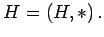
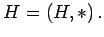
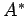

Inhalt Index DeskTop Bronstein

 Algebra und Diskrete Mathematik Klassische algebraische Strukturen Halbgruppen
Algebra und Diskrete Mathematik Klassische algebraische Strukturen Halbgruppen


Oft auftretende algebraische Strukturen haben besondere Namen bekommen. Eine Menge H, versehen mit einer assoziativen binären Operation  heißt Halbgruppe; Bezeichnung 
heißt Halbgruppe; Bezeichnung 
Beispiele für Halbgruppen
| Beispiel A |
|
Zahlenbereiche bezüglich Addition oder Multiplikation. |
| Beispiel B |
|
Potenzmenge bezüglich Vereinigung oder Durchschnitt. |
| Beispiel C |
|
Matrizen bezüglich Addition oder Multiplikation. |
| Beispiel D |
|
Menge  aller ,,Wörter`` (strings) über einem ,,Alphabet`` A bezüglich Hintereinanderschreibung (Worthalbgruppe). |
Hinweis: Bis auf die Multiplikation von Matrizen und die Hintereinanderschreibung von Wörtern sind alle in den Beispielen vorkommenden Operationen kommutativ; man spricht dann von kommutativen Halbgruppen.